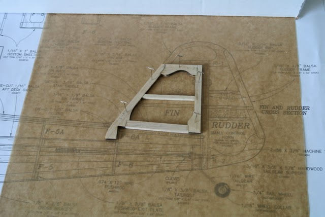
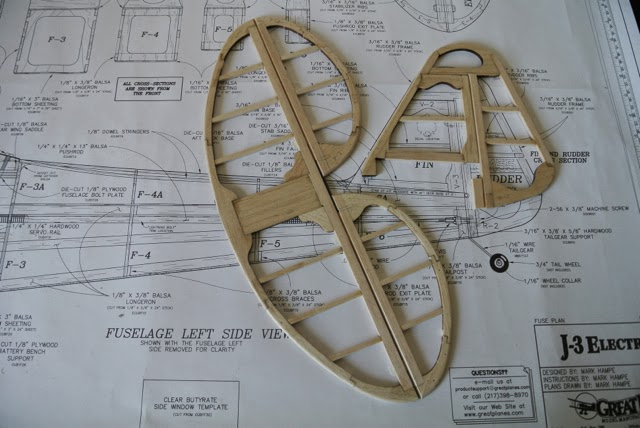
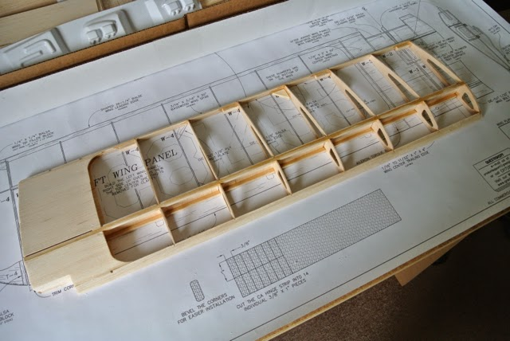
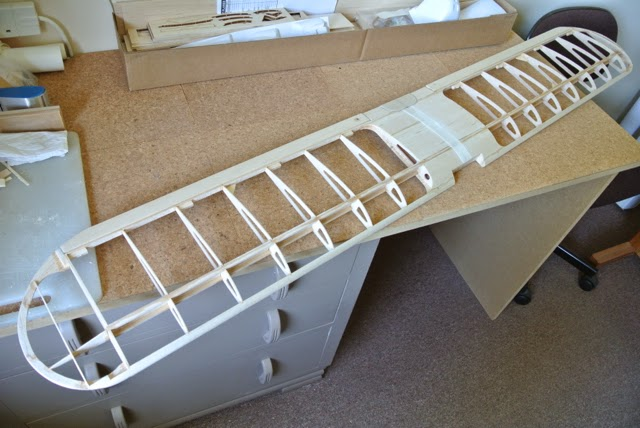
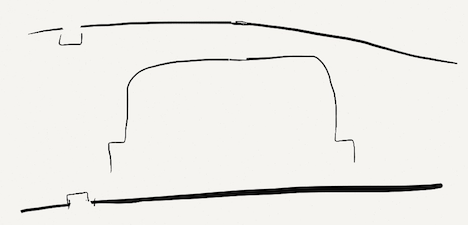

Radio Controlled Aircraft
I guess the instructions start you with the simplest part, just to get you into the swing of things and make some early progress. So here is my first construction. The thicker shaped balsa pieces (3/16") are laser cut, whereas the 1/16" sheets are die-cut. The fin and rudder parts agreed with the plan fairly well. However, the stabiliser pieces were a poor fit, one being too small and others not being the correct shape. So I had to cut thin fillers and modify some pieces.
In spite of the poor fit of the laser-cut pieces I have completed the fin, rudder, tailplane and elevators. The photo shows them temporarily hinged. The two parts of the elevator are joined by a piece of 3/32" wire, with right angle bends. This required drilling holes in the elevators and cutting a grove along a short portion of the elevator leading edge. The instructions suggested using a piece of brass tube with the edge sharpened to make a gouge. However, I found that it was easier to use the drill bit (in a small electric drill) almost as a router.
I did make my first mistake! When cutting the chamfers on the leading edges of the control surfaces I picked up the fin by mistake. I made a beautiful V, but it should have been on the leading edge of the rudder! So I cut a new trailing edge for the fin from scrap sheet and replaced it.
Now on to the wings.
The Easter break, with visits from children and grandchildren, not to mention older relatives, meant that work on the Cub was suspended for a week. Repairs to my SuperStar 40, following a heavy landing, have also taken time. But now I've started assembling the left wing. However, the plan and the instructions indicate that the underside of the wing is completely flat, whereas the die-cut ribs have a slight curve forward of the main spar. I don't know whether the design has changed (this would affect other aspects of the build such as the centre wing sheeting and the fuselage) or I need to flatten the underside of the ribs and deepen the spar notches. I have e-mailed Great Planes support to ask the question and so building is suspended again.
After nearly two weeks there is still no reply from Great Planes (Hobbico Product Support). So I have assumed that the plan is correct and modified the rib profile, flattening the bottom. The photo shows the left wing, without the wing tip which is added once the two wings have been joined. I had quite a job lifting the glued wing from my parchment paper plan cover. In a number of places the CA had wicked under the balsa (or ply) and had attached the paper to the wood. That piece of paper is probably now unusable, so I will need to raid the kitchen cupboard again! The thin CA had also passed through two pin holes and stuck the plan to the cork top of my modelling table. I guess that, where possible, I need to use pins away from points that will be glued.
A one day exposure to our grandchildren resulted in my having a very heavy head cold. The resulting lethargic state, combined with us having our kitchen refitted, has reduced progress on the build. However, between nose blows, today I completed the wings. Admittedly I will need to apply a little balsa filler in a few places. Where, for example, the notch in the die-cut trailing edge was too wide for the rib, I have filled them with slivers of balsa, but non-structural areas and around the fibreglass tape over the centre joint will need a little filler.
A 1/16" plywood joiner slides into a narrow slot in each wing, just behind the main spars. I was pleased with the snugness of the fit for this joiner, but a very slight difference between the positions of the main spars on the two wings meant that they did not align! It didn't really take very much sanding of the spars so as to remove the slight twist and so the two wings became one assembly.
There were then two parts of the build that were not well described in the instructions. Firstly, the method of assembling the wing tips was not really feasible as described. So, having glued the edges together, I assembled the entire wing tip on the end of the wing, using pins to hold parts in place and to position parts at the right height above the building board. Then I went round with thin CA to glue them together.
The other problem was the final step; cutting the hole for the aileron servo tray. I had noticed that the two central ribs, that are epoxy'd together, had an incomplete die-cut (as shown in the sketch), but, having cut through the centre sheeting and the lower part of the rib, the die-cut sections could not be pushed out, due to the epoxy. If I had thought about this at the time, I would have made a cut along the bottom of the die-cut area and removed it, just leaving the bottom edge of the rib, which could be easily cut out at this final stage. However, after some perseverance, I was able to remove the balsa with a knife and the epoxy with some strong tweezers and so fit the servo tray assembly.
Fitting the ailerons was fairly straightforward (the hinges are not glued at this stage). However, the aileron torque rods each have two right-angle bends in them. If you try to drill a hole in the aileron, which is a right-angled triangle in section, parallel to the lower surface, there is not enough width of balsa for the length of the rods. So I drilled the holes at a slight downward angle, which means that the other ends are not at right angles to the underside of the wing when the ailerons are in a neutral position. There seems to be enough movement both up and down, so I don't see it as being a problem.
So I now have a completed set of control surfaces hanging up in my study.